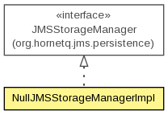

org.hornetq.jms.persistence.impl.nullpm
Class NullJMSStorageManagerImpl
java.lang.Object
 org.hornetq.jms.persistence.impl.nullpm.NullJMSStorageManagerImpl
org.hornetq.jms.persistence.impl.nullpm.NullJMSStorageManagerImpl
- All Implemented Interfaces:
- org.hornetq.core.server.HornetQComponent, JMSStorageManager
public class NullJMSStorageManagerImpl
- extends Object
- implements JMSStorageManager

A NullJMSStorageManagerImpl
- Author:
- Clebert Suconic
| Methods inherited from class java.lang.Object |
clone, equals, finalize, getClass, hashCode, notify, notifyAll, toString, wait, wait, wait |
NullJMSStorageManagerImpl
public NullJMSStorageManagerImpl()
deleteConnectionFactory
public void deleteConnectionFactory(String connectionFactory)
throws Exception
- Specified by:
deleteConnectionFactory in interface JMSStorageManager
- Throws:
Exception
recoverConnectionFactories
public List<PersistedConnectionFactory> recoverConnectionFactories()
- Specified by:
recoverConnectionFactories in interface JMSStorageManager
recoverDestinations
public List<PersistedDestination> recoverDestinations()
- Specified by:
recoverDestinations in interface JMSStorageManager
storeConnectionFactory
public void storeConnectionFactory(PersistedConnectionFactory connectionFactory)
throws Exception
- Specified by:
storeConnectionFactory in interface JMSStorageManager
- Throws:
Exception
storeDestination
public void storeDestination(PersistedDestination destination)
- Specified by:
storeDestination in interface JMSStorageManager
isStarted
public boolean isStarted()
- Specified by:
isStarted in interface org.hornetq.core.server.HornetQComponent
start
public void start()
throws Exception
- Specified by:
start in interface org.hornetq.core.server.HornetQComponent
- Throws:
Exception
stop
public void stop()
throws Exception
- Specified by:
stop in interface org.hornetq.core.server.HornetQComponent
- Throws:
Exception
addJNDI
public void addJNDI(PersistedType type,
String name,
String... address)
throws Exception
- Specified by:
addJNDI in interface JMSStorageManager
- Throws:
Exception
deleteJNDI
public void deleteJNDI(PersistedType type,
String name,
String address)
throws Exception
- Specified by:
deleteJNDI in interface JMSStorageManager
- Throws:
Exception
deleteDestination
public void deleteDestination(PersistedType type,
String name)
throws Exception
- Specified by:
deleteDestination in interface JMSStorageManager
- Throws:
Exception
deleteJNDI
public void deleteJNDI(PersistedType type,
String name)
throws Exception
- Specified by:
deleteJNDI in interface JMSStorageManager
- Throws:
Exception
recoverPersistedJNDI
public List<PersistedJNDI> recoverPersistedJNDI()
throws Exception
- Specified by:
recoverPersistedJNDI in interface JMSStorageManager
- Throws:
Exception
load
public void load()
throws Exception
- Specified by:
load in interface JMSStorageManager
- Throws:
Exception
Copyright © 2013 JBoss, a division of Red Hat. All Rights Reserved.